Explorando Efeitos Climáticos com Modelos Baseados em Agentes
Daniel Vartanian
Universidade de São Paulo
07/11/2025
Olá! 👋
Esta apresentação trata sobre o uso de Modelos Baseados em Agentes (ABMs) e mostra como eles representam uma ferramenta capaz de integrar diferentes perspectivas na modelagem de sistemas complexos e de analisar de forma conjunta os efeitos das mudanças climáticas.
Aqui estão os tópicos principais:
- Modelos Baseados em Agentes
- LogoClim: WorldClim no NetLogo
- Logônia: Um Exemplo de Aplicação
- Sindemia Global
- Conclusão
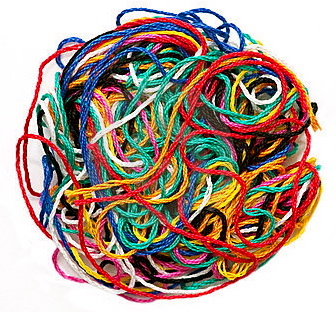
(Ilustração de Allison Horst)
Modelos Baseados em Agentes
Modelos baseados em agentes (ABMs) são modelos computacionais usados para simular o comportamento de agentes e suas interações, permitindo estudar fenômenos emergentes.
Em vez de descrever um sistema apenas com variáveis que representam o estado do sistema como um todo (abordagem global/de cima pra baixo), modelamos apenas seus agentes e suas interações (abordagem local/de baixo pra cima) (Railsback & Grimm, 2019).
Agentes frequentemente representam pessoas ou outros animais, mas podem representar qualquer coisa, desde células até empresas ou municípios (Smaldino, 2023).
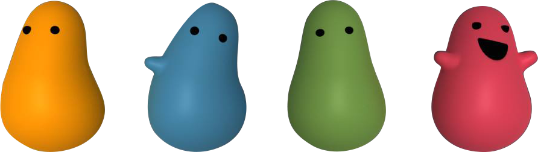
(Imagem e vídeo de Primer)
NetLogo
(Foto de MIT Museum)
Modelagem Orient. a Padrões
Um padrão é qualquer coisa além da variação aleatória.
Podemos pensar em padrões como regularidades, sinais.

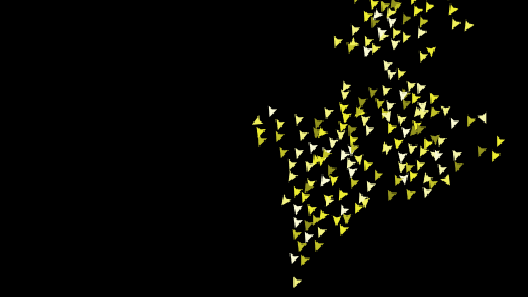
Alinhamento: Um pássaro tende a se alinhar na mesma direção que os pássaros próximos.
Separação: Um pássaro vai se afastar para evitar outro pássaro que se aproxime demais.
Coesão: Um pássaro se moverá em direção a outros pássaros próximos (a menos que outro pássaro esteja muito próximo).
Exemplos
Ecologia
Presa-Predador (Lotka, 1925; Volterra, 1926)
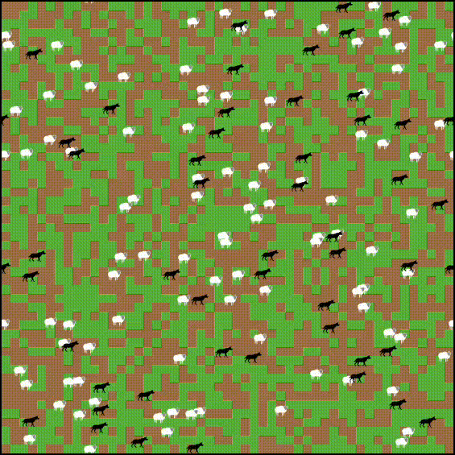
Epidemiologia
Epidemia (SIR) (Kermack & McKendrick, 1927)
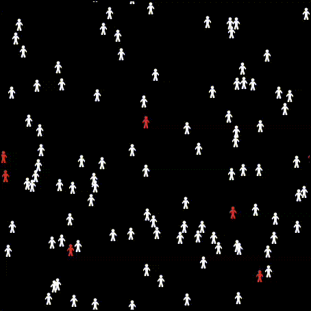
Exemplos
Física
Figuras de Chladni (Chladni, 1787)
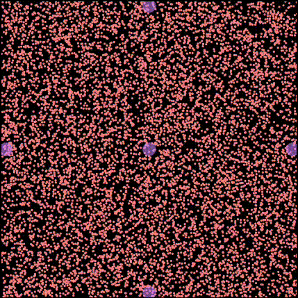
Psicologia Evolutiva
Altruísmo (Lehmann & Keller, 2006)
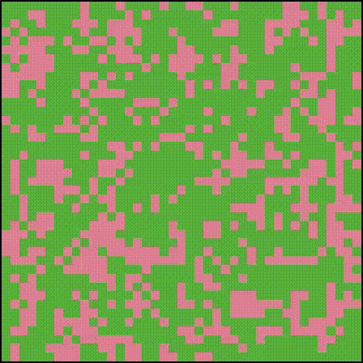
Exemplos
Sociologia
Segregação (Schelling, 1971)
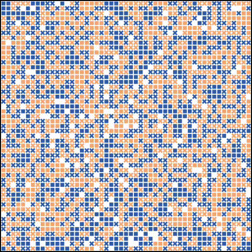
Ciências Ambientais
Incêndios Florestais
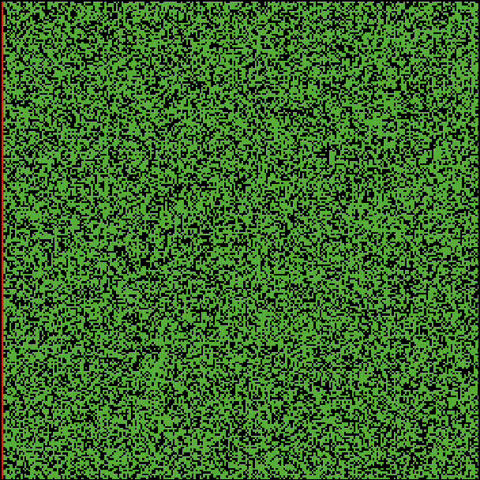
Exemplos
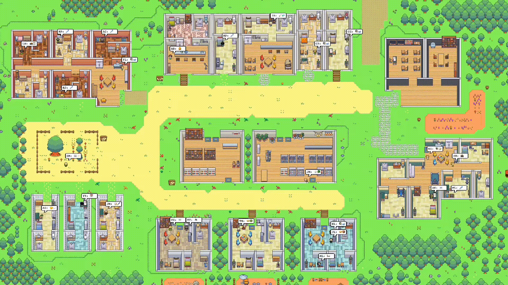
(Modelo de Park et al. (2023))
Usos de ABMs
Desenvolvimento e corroboração de teorias.
Exploração de cenários e pontos de alavanca.
Previsão de cenários futuros (apenas para modelos empíricos)
Dada as condições da sua teoria, é possível replicar o fenômeno e seus padrões por meio de uma simulação de agentes?
[…] eles acham que você terminou quando não consegue adicionar mais nada. Eu acho que você terminou quando não consegue tirar mais nada. (Joshua Epstein) (Rutt, 2020)
Uma teoria que não pode ser refutada por nenhum evento concebível não é científica. A irrefutabilidade não é uma virtude de uma teoria (como muitos pensam), mas um vício. (Popper, 1963/2002)
Tipos de Modelos
Modelos abstratos permitem o exame de princípios gerais em detalhe (Rand & Wilensky, 2007).
Modelos empíricos são geralmente mais orientados à previsão e frequentemente precisam abordar questões específicas levantadas por formuladores de políticas em locais particulares (Sun et al., 2016).
A modelagem de espectro completo combina os benefícios de modelos abstratos e empíricos (Rand & Wilensky, 2007).
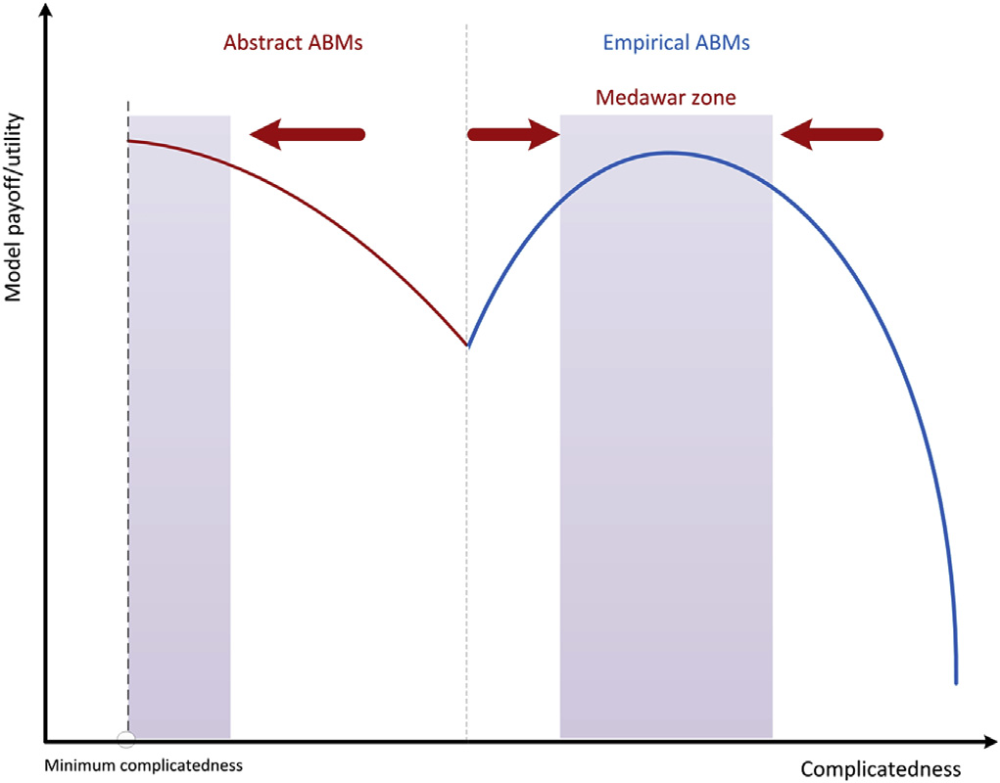
LogoClim
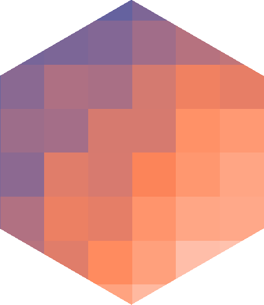
LogoClim é um modelo em NetLogo desenvolvido para simular e visualizar condições climáticas globais. Ele permite que pesquisadores integrem dados climáticos de alta resolução em modelos baseados em agentes, apoiando pesquisas reprodutíveis em ecologia, agricultura, ciências ambientais e outras áreas que dependem de dados climáticos.
LogoClim
O WorldClim 2.1 é um projeto de Stephen E. Fick e Robert J. Hijmans que fornece dados climáticos globais de alta resolução, como temperatura e precipitação, podendo ser utilizados para mapeamento e modelagem espacial (Fick & Hijmans, 2017).
O conjunto de dados inclui séries históricas reduzidas em escala (downscaled) do CRU-TS-4.09, contendo dados interpolados a partir de milhares de estações meteorológicas, além de projeções futuras reduzidas em escala derivadas dos modelos do Coupled Model Intercomparison Project Phase 6 (CMIP6).
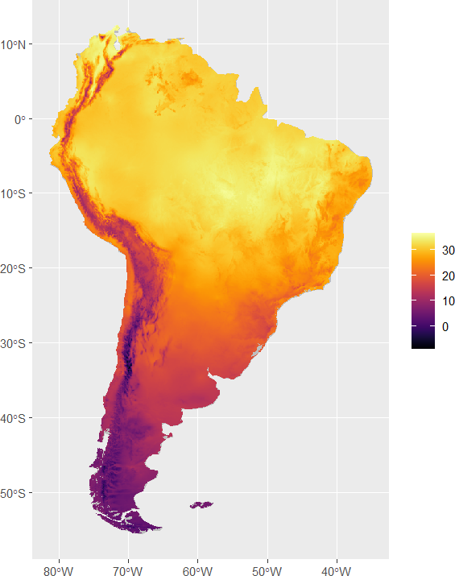
LogoClim
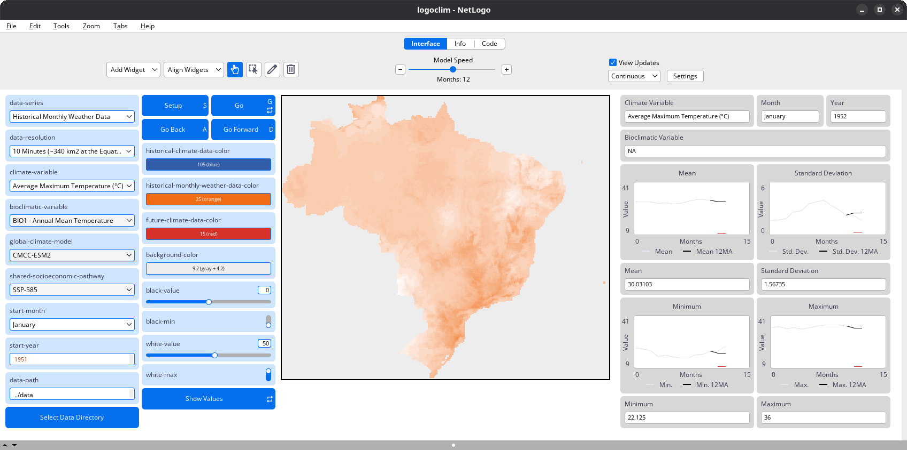
Logônia
Logônia é um modelo em NetLogo que simula a resposta de crescimento de uma planta fictícia, a logônia, sob diferentes condições climáticas. O modelo utiliza dados climáticos do WorldClim 2.1 e demonstra como integrar o modelo LogoClim por meio da extensão LevelSpace.
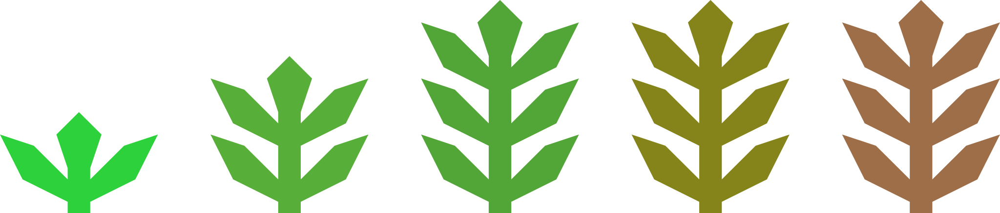
Logônia
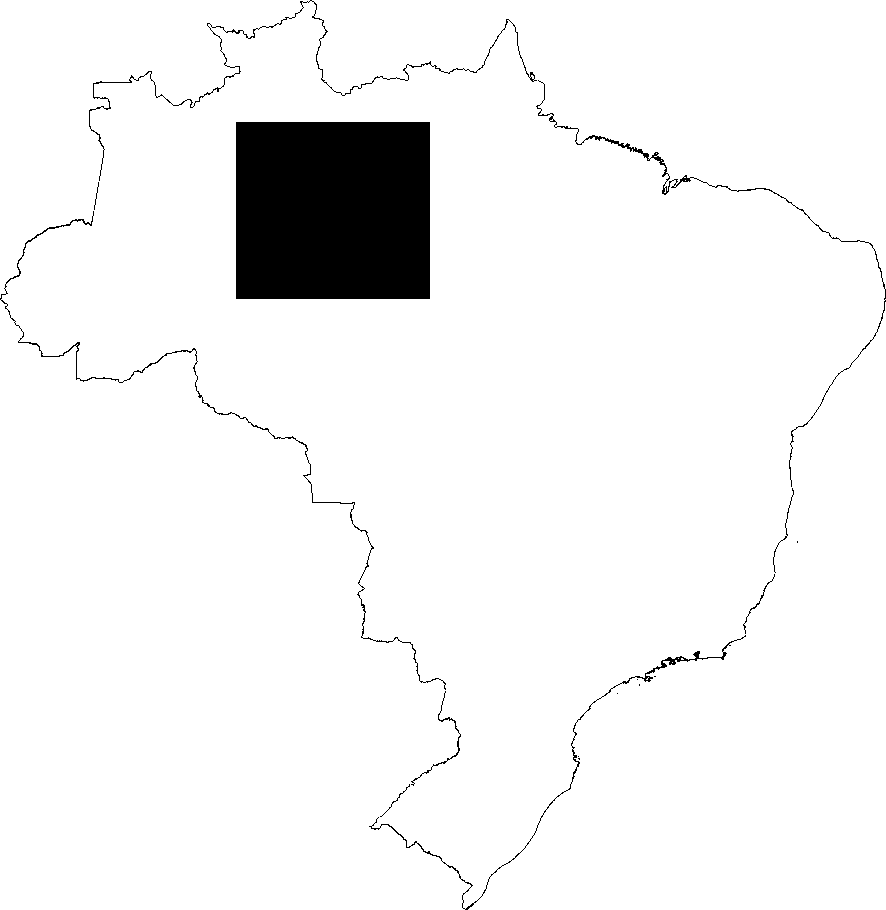
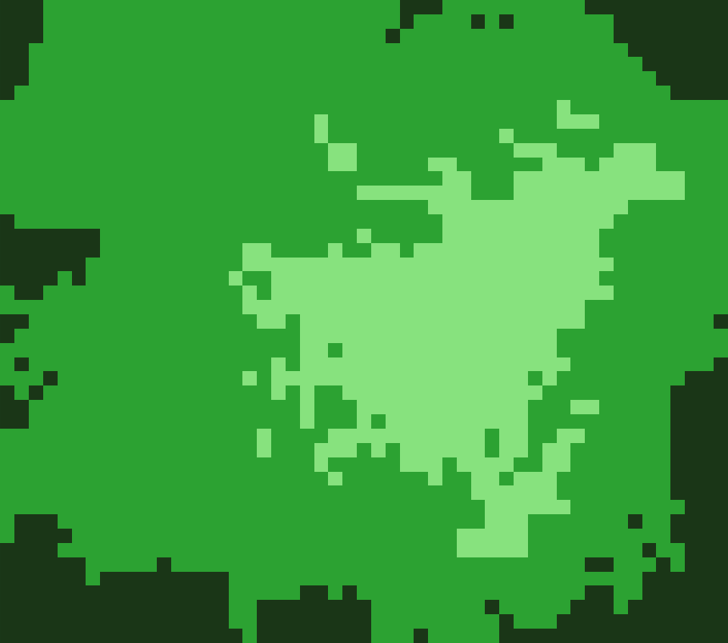
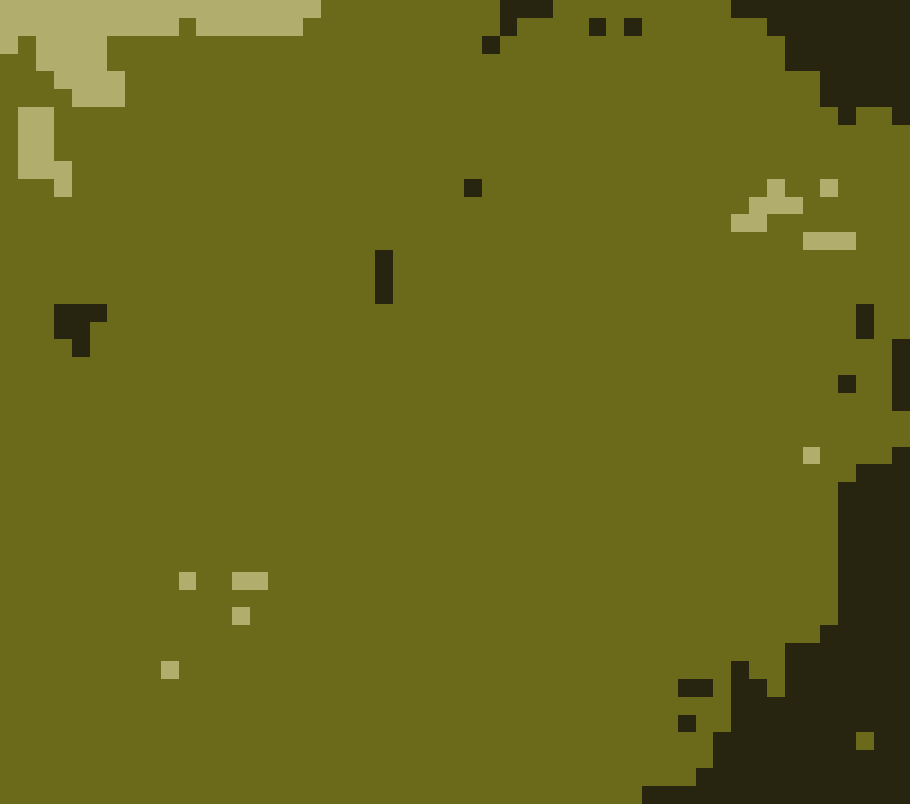
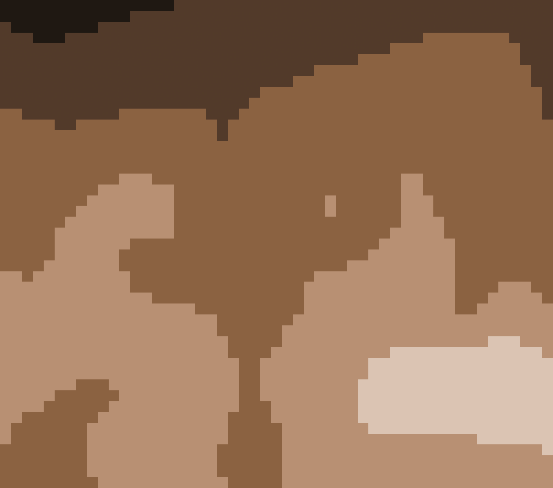
Logônia
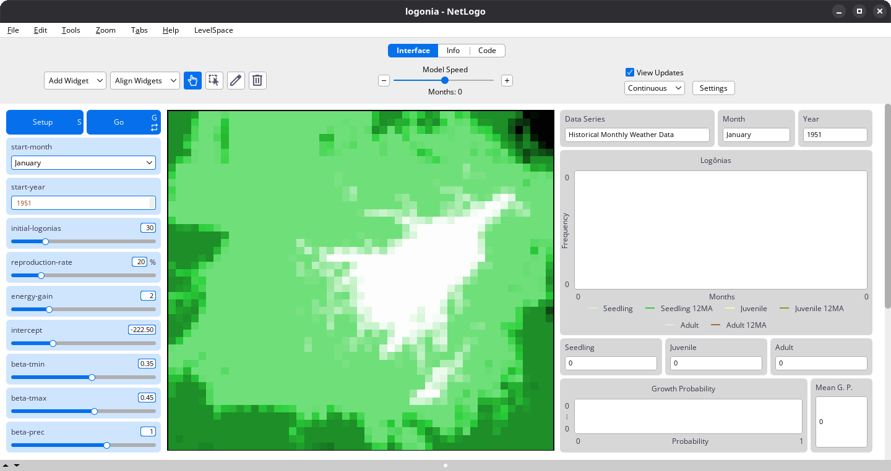
Logônia
Energia e Probabilidade de Crescimento
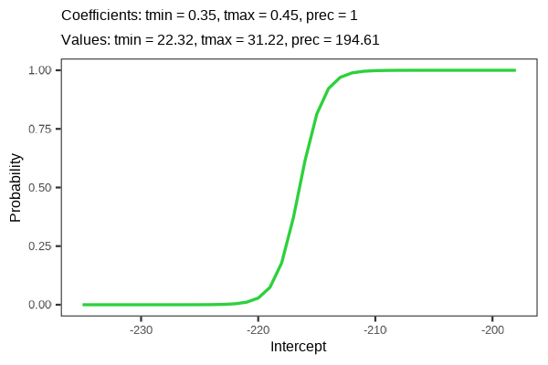
Fases de Crescimento
Senescência
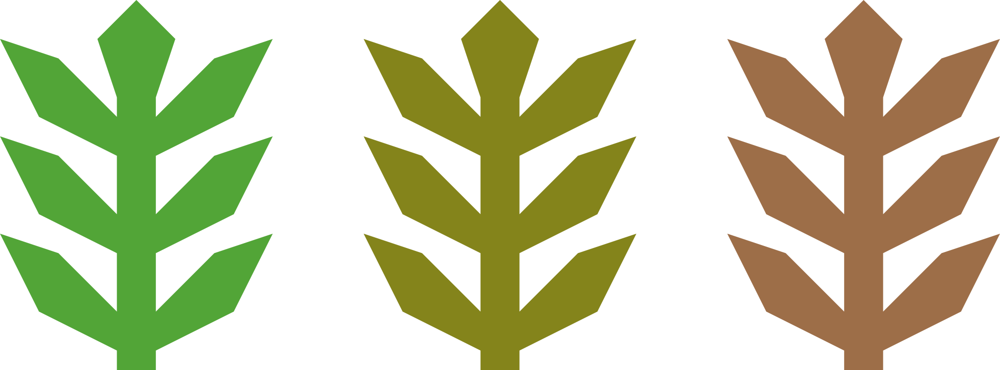
Logônia
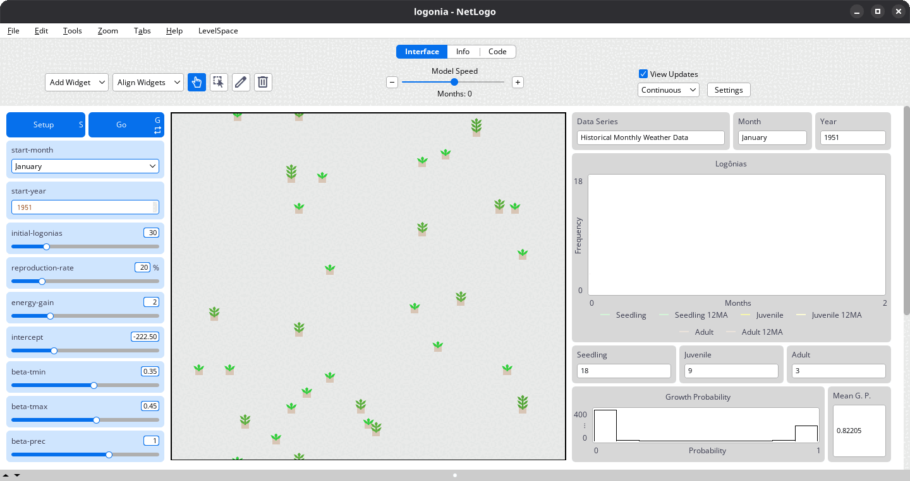
Logônia
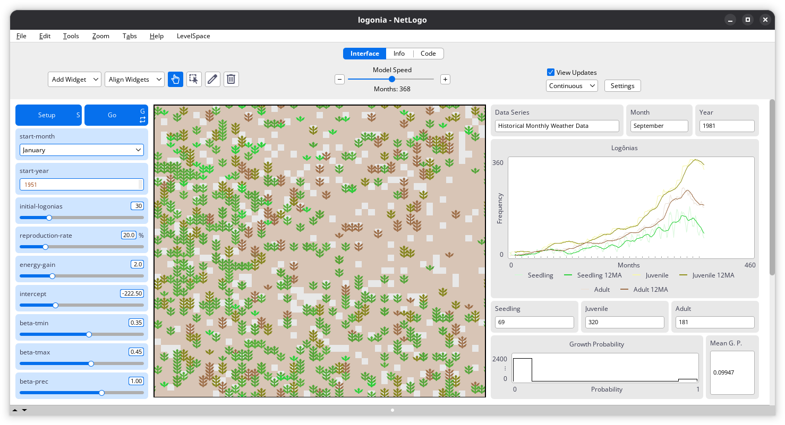
Logônia
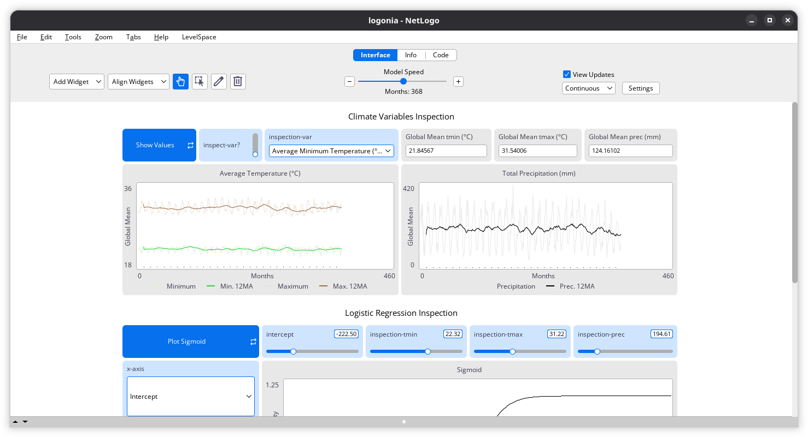
Sindemia Global
👁️⃤
Observador
Células
⊞
🌡️
🌧️
Alimentos
🍌🍅
🥬🌾
🥛🥩
Famílias
👨👩👧
👩👩👦
👨👨👧
Crianças
🧒
👧
Como Saber Mais?
Como Saber Mais?
Como Saber Mais?
SIMBRA
1.º Simpósio Interdisciplinar Brasileiro
de Modelos Baseados em Agentes
Considerações Finais
Esta apresentação foi criada com o sistema de publicação Quarto. O código e os materiais estão disponíveis no GitHub.

(Ilustração de Allison Horst)
Referências
De acordo com o Estilo da American Psychological Association (APA), 7ª edição.
Obrigado!

(Ilustração de Allison Horst)